Principles of Data Visualization
References
Effective Data Encoding
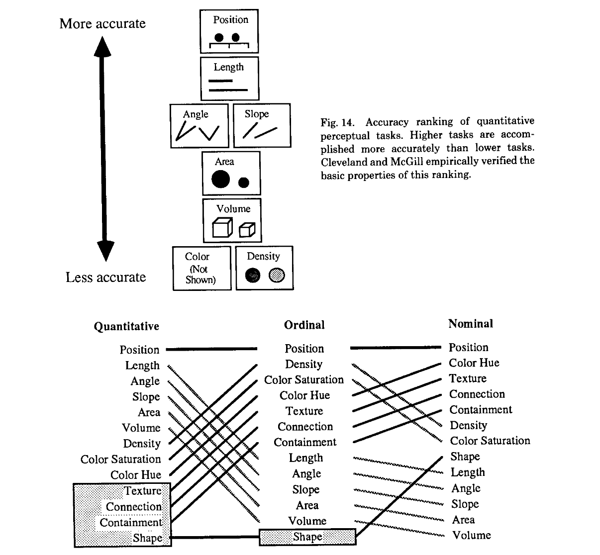
- Position is most effective data encoding
- Colour hue can be good to encode categorical differences
Proportional Data
Pie charts are frequently used to illustrate proportions that should sum to 1. This can work for only the simplest cases, but in general it will be difficult to compare different pie chart
Code
df_count = pd.DataFrame({
"group1": [20,5,18,5,18,12,5],
"group2": [20,5,15,5,18,12,8],
}, index=list("ABCDEFG"))
fig, ax = plt.subplots( 1, 3, figsize=FIGSIZE,
gridspec_kw={"width_ratios": [1, 1, 2]})
df_count.plot.pie(y="group1", ax=ax[0], legend=False)
df_count.plot.pie(y="group2", ax=ax[1], legend=False)
df_count.T.plot(kind="bar", stacked=True, legend=False, ax=ax[2])
fig.suptitle("Which counts have changed?")
plt.tight_layout()
plt.show()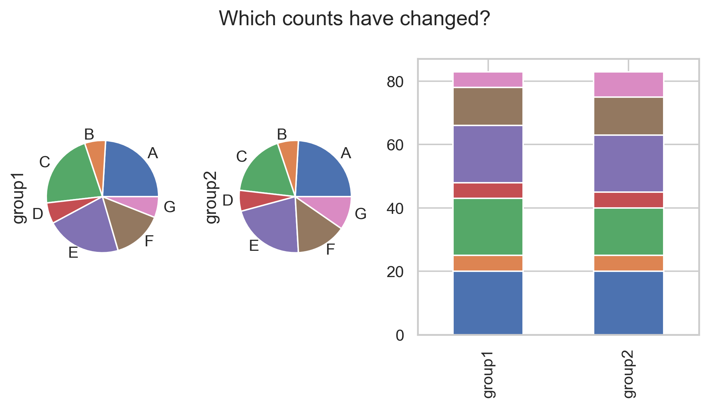
Principle: Areas are not the best encoding for quantitative values and arc elements are difficult to compare.
Stacked bar charts with a consistent ordering of categories are easier to read.
Replace pie charts! Use stacked bar charts when comparing sizes across groups.

Bars and Boxes
A bar plot of means hides the actual observations. Two groups can have similar means and standard deviations but very different distributions.
Code
n = 60
df_bin = pd.DataFrame({
"group": np.repeat(["A", "B"], n),
"value": np.r_[
rng.normal(10, 1.2, n),
np.r_[rng.normal(8.5, 0.4, n // 2), rng.normal(11.5, 0.4, n // 2)]
]
})
fig, axes = plt.subplots(1, 2, figsize=FIGSIZE, sharey=True)
sns.barplot(data=df_bin, x="group", y="value", ax=axes[0])
axes[0].set_title("Poor: mean ± SD only")
sns.stripplot(data=df_bin, x="group", y="value", alpha=0.7, jitter=0.25, ax=axes[1])
sns.boxplot(data=df_bin, x="group", y="value", color="lightgray", ax=axes[1])
# boxplots show IQR between Q1 (25%) and Q3 (75%)
axes[1].set_title("Better: show observations")
plt.tight_layout()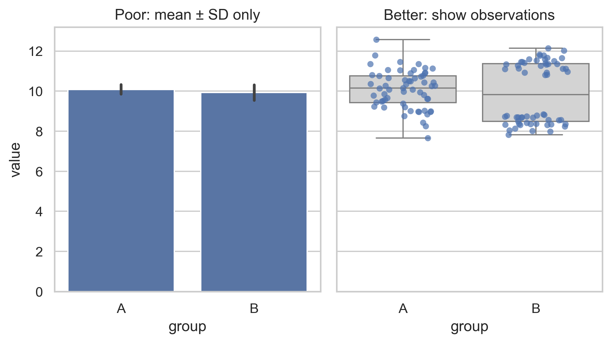
- also boxplots maybe misleading for multimodal data.
- Beware of meaningless means and erroneous errorbars!
Principle: show raw observations when sample size permits.
Colours
- are not the most suitable way to encode quantitative values.
- may improve visual encoding of categorical variables.
Do I need colour encoding at all?
Do not reinvent the colour wheel
Colour palettes can be customized, but with great colour power comes great responsibility. Suitable colour palettes have been studied and optimized for a long time. Do not waste your time!
Same data definition as before
np.random.seed(42)
n = 30
# synthetic HbA1c-Werte [in %]
# normal 5%, ehoeht: 6%, Diabetes mellitus: > 6.5%, 8% Handlungsbedarf
before = np.random.normal(loc=9.0, scale=1, size=n)
# Two treatmentgroups
group = np.random.choice(["A", "B"], size=n, p=[0.25, 0.75])
after = before.copy()
after[group == "A"] -= np.random.normal(0.5, 0.1, size=(group == "A").sum())
after[group == "B"] += np.random.normal(0.0, 0.1, size=(group == "B").sum())
df = pd.DataFrame({
"patient": np.arange(n),
"before": before,
"after": after,
"group": group
})
df[["before","after"]].head()
#print(df[["before", "after"]].mean())
#df.groupby("group").describe().T| before | after | |
|---|---|---|
| 0 | 9.496714 | 9.594269 |
| 1 | 8.861736 | 8.813818 |
| 2 | 9.647689 | 9.215381 |
| 3 | 10.523030 | 10.504464 |
| 4 | 8.765847 | 8.204679 |
Code
fig, axes = plt.subplots(1, 2, figsize=FIGSIZE, sharey=True)
# hand-picked arbitrary colours
bad_palette = {
"A": "red",
"B": "green",
}
good_palette = "Set2" # pre-defined qualitative palette from ColorBrewer
sns.boxplot( data=df, x="group", y="after",
hue="group",
palette=bad_palette,
ax=axes[0],
)
axes[0].set_title("Avoid: arbitrary colours")
# Better: tested qualitative palette
sns.boxplot(
data=df, x="group", y="after",
hue="group",
palette=good_palette,
ax=axes[1],
)
axes[1].set_title("Better: ColorBrewer Set2")
plt.tight_layout()
plt.show()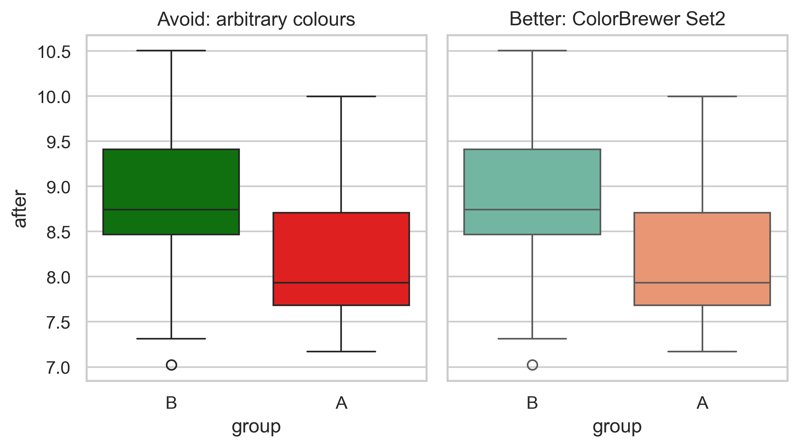
Question: Do you really need a colour encoding here?
Principle: use pre-defined colour palettes e.g. ColorBrewer
Don’t use bidirectional colour scales for unidirectional data
Heatmaps are popular tools to encode numerical data. A diverging color scale implies a meaningful center, often zero.
Code
rng = np.random.default_rng(42)
corr = pd.DataFrame(rng.uniform(low=-1, high=1, size=(6, 6)))
heat = pd.DataFrame(rng.gamma(shape=2, scale=2, size=(6, 6)))
fig, axes = plt.subplots(1, 2, figsize=FIGSIZE)
sns.heatmap(heat, cmap="coolwarm", vmin=0,
square=True, cbar_kws={"shrink":0.6}, ax=axes[0])
axes[0].set_title("Misleading. \n Data is strictlypositive")
sns.heatmap(heat, cmap="Blues", vmin=0,
square=True, cbar_kws={"shrink":0.6}, ax=axes[1])
axes[1].set_title("Better. \n For sequential scale")
#sns.heatmap(corr, cmap="coolwarm", vmin=-1, vmax=1,
# square=True, cbar_kws={"shrink":0.6},
# ax=axes[2])
#axes[2].set_title("OK. \n Data has true center at zero")
plt.tight_layout()
plt.show()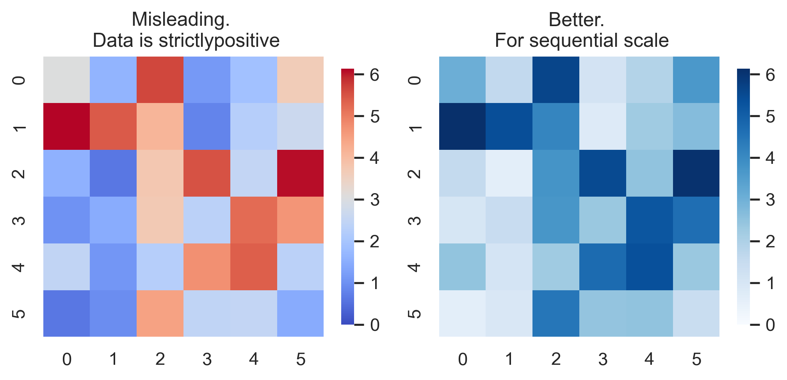
Principle: Use divergent colours only for data with a meaningful center.
Multifactorial Visualization
For multifactorial designs, you might be tempted to define all variable combinations as one and encode plot them on the x-axis.
Code
long_df = df.melt(
id_vars=["patient","group"],
value_vars=["before", "after"],
var_name="time",
value_name="hba1c"
)
ORDER = ["before", "after"]
long_df["time"] = pd.Categorical(
long_df["time"],
categories=ORDER,
ordered=True
)
# introduce a new variable that combines group and time
long_df["combination"] = (
long_df["group"].astype(str) + "_" +
long_df["time"].astype(str)
)
print(long_df.head()) patient group time hba1c combination
0 0 B before 9.496714 B_before
1 1 B before 8.861736 B_before
2 2 A before 9.647689 A_before
3 3 B before 10.523030 B_before
4 4 A before 8.765847 A_beforeCode
plt.figure(figsize=FIGSIZE)
sns.stripplot(
data=long_df,
x="combination", y="hba1c",
jitter=0.15
)
plt.suptitle("Avoid: Factor Combinations on X")
plt.show()
sns.catplot(data=long_df,
x="time", y="hba1c", hue="group", col="group",
kind="strip", jitter=0.15, dodge=False,
aspect=0.9, height=FIGSIZE[1],
legend=False
)
plt.suptitle("Better: Use facets")
plt.show()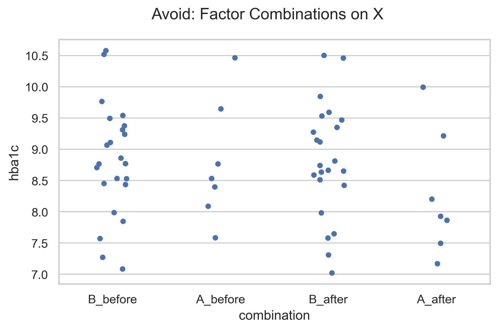
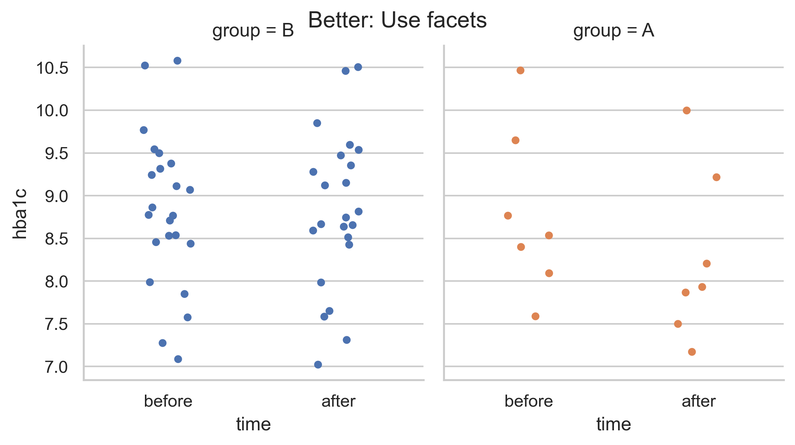
Principle: decide which comparisons matter, then use facets, grouping, and ordering to support those comparisons.
Summarizing Small Samples
Small sample sizes can be a problem for histograms (bin sensitivty), violin plots (smoothing artefacts), and bar plots (misleading means and error bars).
Code
rng = np.random.default_rng(42)
n = 10
small_n = pd.DataFrame({
"group": np.repeat(["A", "B"], n),
"value": np.r_[rng.normal(0, 1, n), rng.normal(0, 1, n)]
})
fig, axes = plt.subplots(1, 3, figsize=FIGSIZE, sharey=True)
sns.histplot(data=small_n, y="value", hue="group", alpha=0.5, ax=axes[0])
axes[0].set_title("Sensitive to binning")
sns.violinplot(data=small_n, x="group", y="value", ax=axes[1])
axes[1].set_title("Sensitive to smoothing")
sns.stripplot(data=small_n, x="group", y="value", ax=axes[2])
axes[2].set_title("Better: show every point")
plt.tight_layout()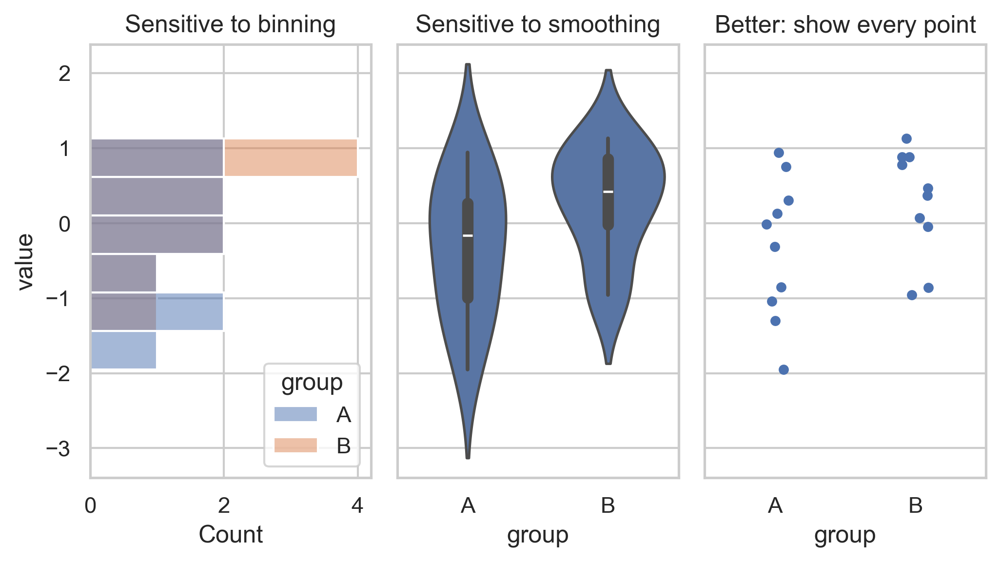
Principle: Show data points whenever possible.
Sets and Upsets
Boolean Variables (Presence/Absence)define sets of samples - for example, patients with or without certain conditions.
Code
# Synthetic data: 4 (index) sets indicated by Boolean
np.random.seed(42)
n = 300
obesity = rng.random(n) < 0.35
diabetes = np.where(
obesity,
rng.random(n) < 0.60, # obese patients
rng.random(n) < 0.10 # non-obese patients
)
hypertension = np.where(
obesity,
rng.random(n) < 0.55,
rng.random(n) < 0.15
)
pneumonia = np.where(
obesity,
rng.random(n) < 0.15,
rng.random(n) < 0.25
)
df = pd.DataFrame({
"Obesity": obesity,
"Diabetes": diabetes,
"Hypertension": hypertension,
"Pneumonia": pneumonia,
})
print('Synthetic data. Shape:', df.shape)
df.head(5)Synthetic data. Shape: (300, 4)| Obesity | Diabetes | Hypertension | Pneumonia | |
|---|---|---|---|---|
| 0 | False | False | True | False |
| 1 | False | False | False | False |
| 2 | False | False | False | False |
| 3 | False | False | False | False |
| 4 | False | False | False | False |
Visualizing Pairwise Intersects
Code
fig, ax = plt.subplots(2,2,figsize=(7.5,7.5))
ct = pd.crosstab( df["Obesity"], df["Diabetes"])
sns.heatmap(ct,
annot=True, fmt="d", cmap="Blues", vmin=0,
square=True, cbar_kws={"shrink":0.7},
ax=ax[0,0]
)
ax[0,0].set_title("Cross-tabulation")
df_int = df.astype(int)
inter = df_int.T.dot(df_int) # df_int.T @ df_int
sns.heatmap(inter,
annot=True, fmt="d", cmap="Blues", vmin=0,
square=True, cbar_kws={"shrink":0.7},
ax=ax[0,1]
)
ax[0,1].set_title("Pairwise intersects")
phi = df.astype(int).corr()
sns.heatmap(phi,
annot=True, fmt=".2f", cmap="coolwarm",
vmin=-1, vmax=1,
square=True, cbar_kws={"shrink":0.7},
ax=ax[1,0]
)
ax[1,0].set_title("Pairwise correlation (Phi)")
# union(A,B) = size(A) + size(B) - intersect(A,B)
sizes = df_int.sum().values
union = sizes[:, None] + sizes[None, :] - inter
jaccard = inter / union
# same from sklearn
sns.heatmap(jaccard,
annot=True, fmt=".2f", cmap="Blues",
vmin=0, vmax=1,
square=True, cbar_kws={"shrink":0.7},
ax=ax[1,1]
)
ax[1,1].set_title("Pairwise similarity (Jaccard)")
plt.tight_layout()
plt.show()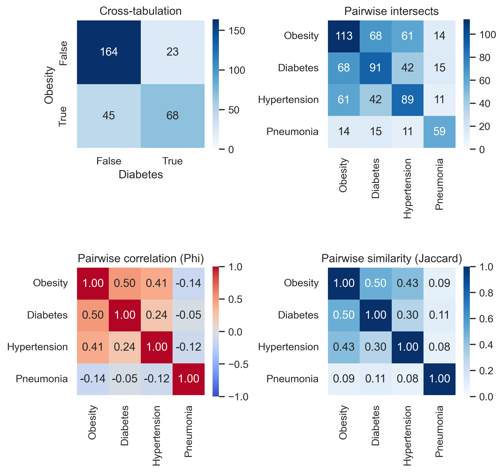
Visualizing Multiple Intersects
Code
<Figure size 1050x600 with 0 Axes>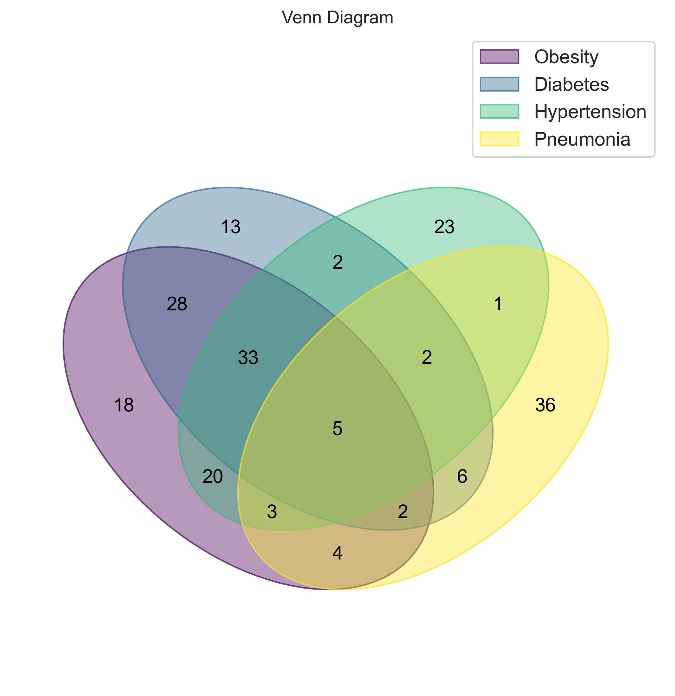
Venn Problems:
- overlap areas are not to scale
- Venn diagrams do not scale well beyond 3 sets
Code
from upsetplot import UpSet, from_indicators
import warnings
warnings.filterwarnings(
"ignore",
category=FutureWarning,
module="upsetplot"
)
fig = plt.figure(figsize=FIGSIZE)
# create multi-index from Boolean column
upset_data = from_indicators(df.columns, df)
UpSet(upset_data, sort_by="cardinality").plot(fig=fig)
plt.suptitle("UpSet Plot (same data)")
plt.show()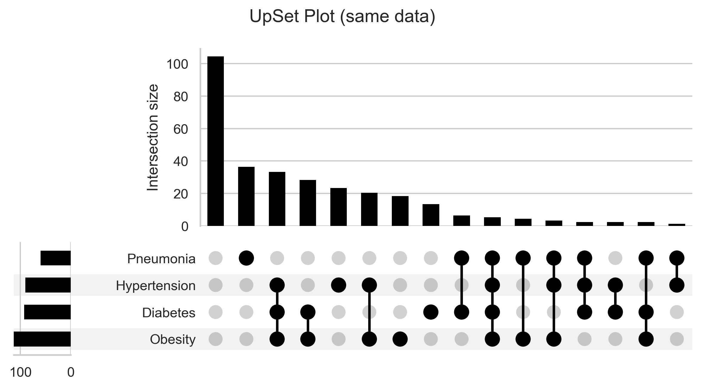
Principle: Don’t use Venn diagrams, use Upset plots instead !